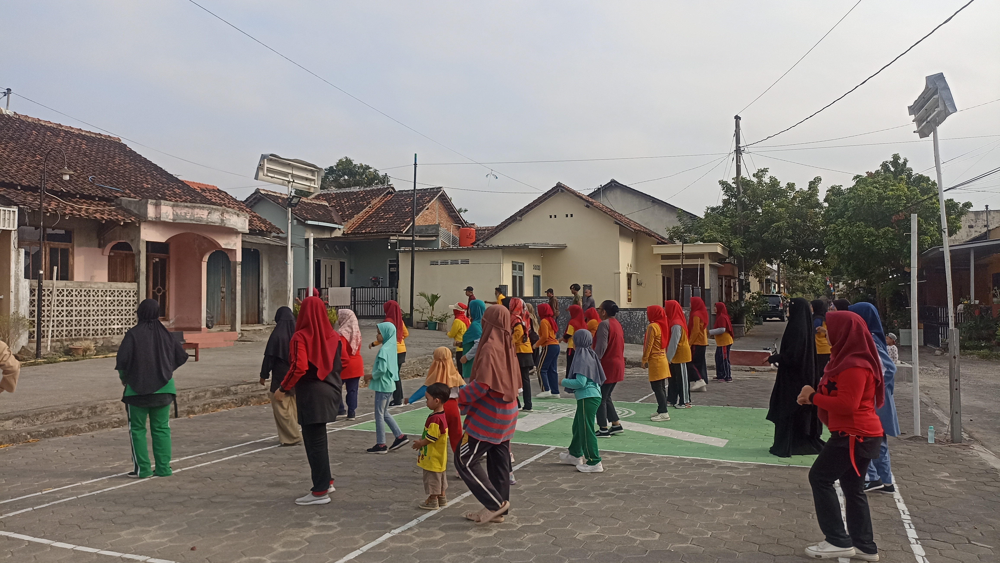
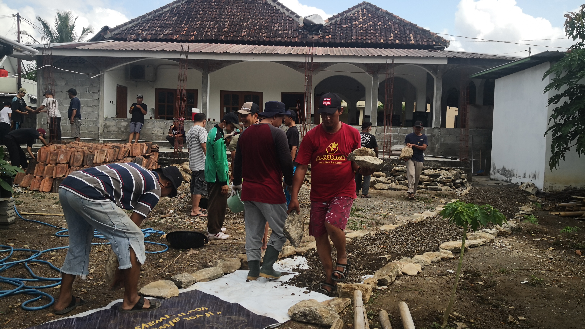
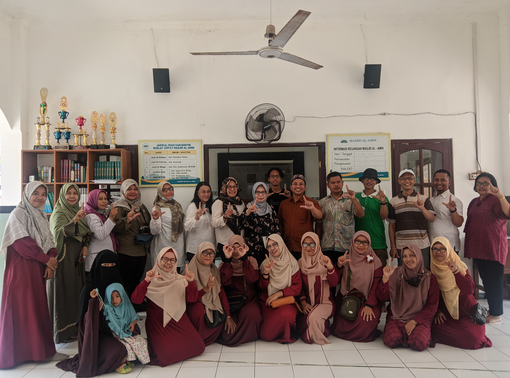

Tentang
Perumahan Pringgading Permai
Perumahan PringgadingPermai merupakan perumahan yang terletak di Kabupaten Bantul, Daerah Istimewa Yogyakarta. Perumahan Pringgading Permai sendiri terdiri dari 80 KK dengan jumlah penduduk 420 jiwa. Masyarakat setempat cenderung bermata pencaharian sebagai pegawai/karyawan dan wirausaha. Luas perumahan Perumahan Pringgading Permai sekitar 2,3 hektar dengan kondisi topografi dataran tinggi yang subur dibidang pertanian.
Dokumentasi Kegiatan Desa
Dokumentasi kegiatan di Perumahan Pringgading Permai.

Pengolahan sampah organik

Senam Pagi

Senam Bareng

Kerja Bakti

Kunjungan Tim Adipura

Senam Bulanan